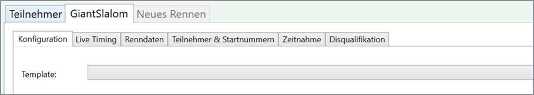

Wettbewerb & Rennen
Ein Wettbewerb ist eine Zusammenfassung von einem oder mehreren Rennen. Ein Wettbewerb wird in einer Wettbewerbsdatei gespeichert. Anmerkung: Die Wettbewerbsdatei ist nahezu rückwärtskompatibel mit DSVAlpin.
Wettbewerb anlegen
Ein Wettbewerb wird über das Menü Datei -> Neu angelegt. Im darauffolgenden Dialog muss ein Dateiname angeben werden. Wird eine existierende Datei angegeben, so wird diese Datei überschrieben.
Rennen anlegen
Ein Rennen wird über den Tab „Neues Rennen“ angelegt.
• Wechseln sie auf den Tab „Neues Rennen“.
• Wählen sie den Renntyp (z.B.: Riesenslalom, Slalom).
• Drücken sie „Rennen erstellen“.
Es erscheint ein neuer Tab mit dem gerade erstellten Rennen.
Rennen löschen
Um ein Rennen zu löschen drücken sie auf das X im zu löschenden Renn-Tab. Nach einer Sicherheitsabfrage kann das Rennen gelöscht werden.
Rennkonfiguration
Die Rennkonfiguration gibt an, wie ein Rennen ausgewertet werden soll und welche Datenfelder benutzt werden. Beispielparameter einer Rennkonfiguration sind: Anzahl der Durchgänge, Sortierung der Startliste, Gruppierungen für Startliste bzw. die Ergebnisse, verwendete Datenfelder. Auch DSV-spezifische Wert wie F-Wert, Adder und Minimumzuschlag sind Teil der Rennkonfiguration. Die Rennkonfiguration befindet sich im Tab „Konfiguration“ des entsprechenden Rennens.

Um nicht jedes Mal eine komplette Rennkonfiguration eingeben zu müssen, kann die Rennkonfiguration aus einem Template erstellt werden. Beispieltemplates sind DSV Schüler, Skiverbandsrennen, Vereinsrennen. Die Rennkonfiguration wird erst übernommen, wenn Speichern gedrückt wird. Anmerkung: Die DSVAlpin-Rennkonfiguration wird derzeit nicht aus dem DSVAlpin Programm übernommen. Kontrollieren sie die Parameter, wenn die Bewerbsdatei aus DSVAlpin übernommen wird.